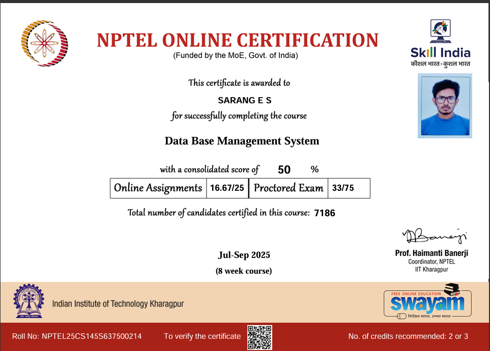
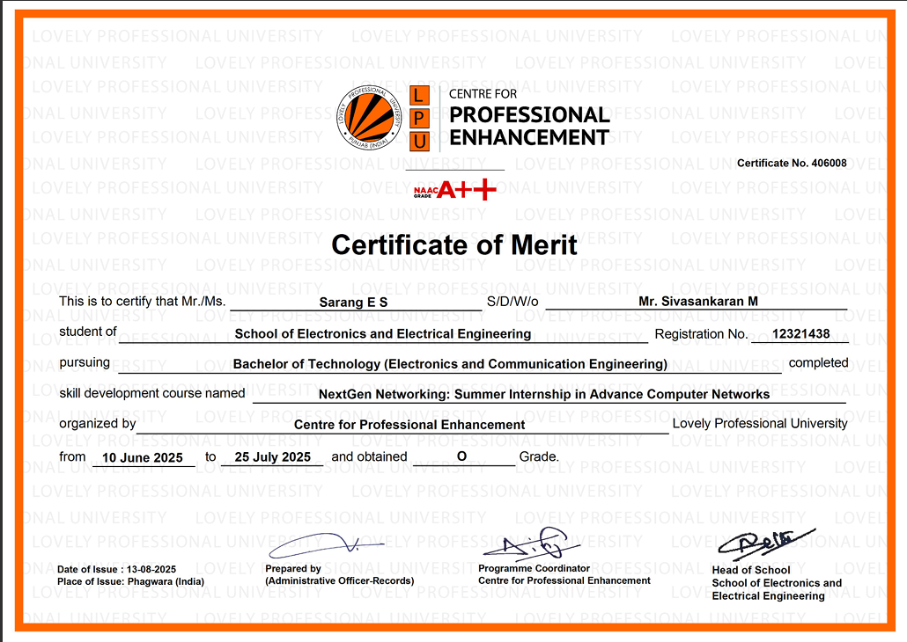
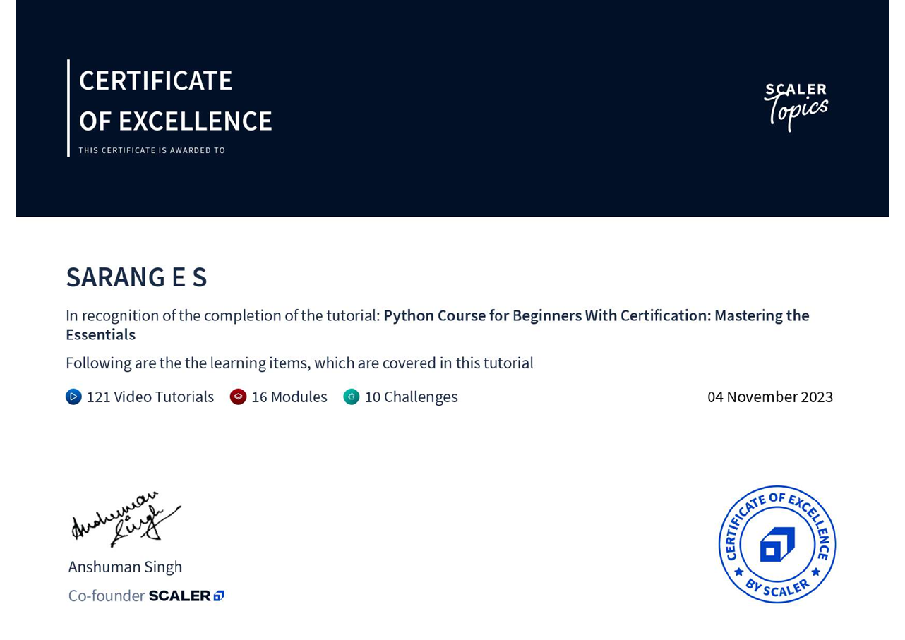

Sarang E S
Aspiring Embedded System Engineer
Electronics and Communication Student Passionate about developing Embedded Systems and Software Solutions that combine hardware, programming, and real-world problem solving.

Aspiring Embedded System Engineer
Electronics and Communication Student Passionate about developing Embedded Systems and Software Solutions that combine hardware, programming, and real-world problem solving.
Download my full professional background as a comprehensive PDF.
A portfolio of multi-disciplinary engineering projects covering robotics, energy harvesting, and web technology. Click on any project to view details.
Autonomous mobile purification system using MQ135/PM sensors and ESP32. Dynamically moves to zones with highest pollution...
Harvests mechanical energy from rotational turnstiles in metro stations. Uses electromagnetic induction and voltage regulation...
Health-tech solution using FSR sensors for real-time posture validation. Features visual and audio feedback via LED/Buzzer indicators.
Measures V, I, and Power consumed by electrical loads using 8051 MCU and ADC0804. Designed with Embedded C in Keil...
Real-time foot pressure monitoring system utilizing FSRs and ESP32 to study balance, posture, and step quality for rehabilitation.
A full-stack web app providing real-time market prices, weather forecasts, and a multilingual query chatbot with voice recognition...
Centre of Professional Enhancement, Lovely Professional University
Intensive training in Advance Computer Networks, focusing on foundational and enterprise-level architecture.
Lovely Professional University, Punjab
Hill Blooms School, Wayanad
Hill Blooms School, Wayanad

Database Management System
NPTEL Certified

NextGen Networking Merit
LPU Professional Enhancement
.png)
Embedded C Programming
Udemy | STM32

Python for Beginners
Scaler Topics